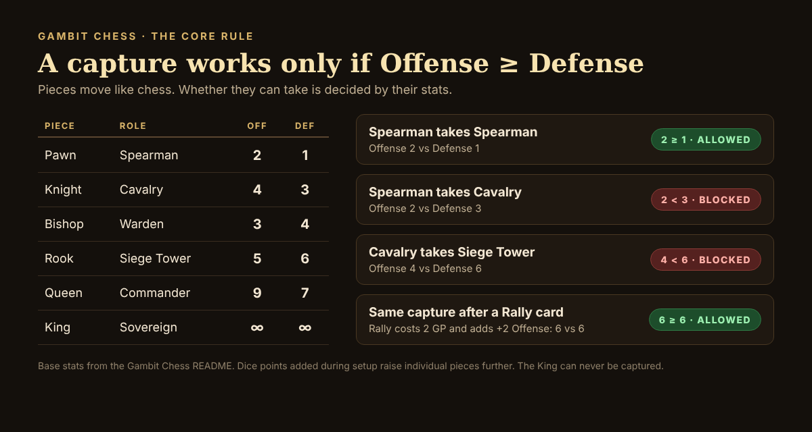
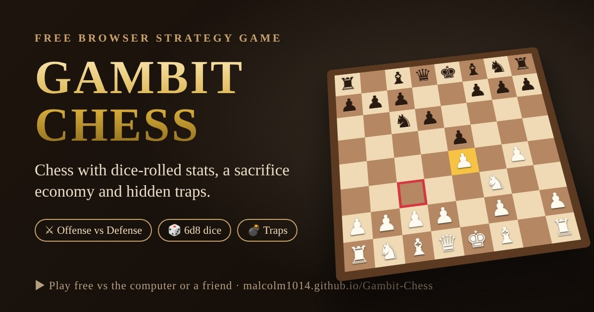
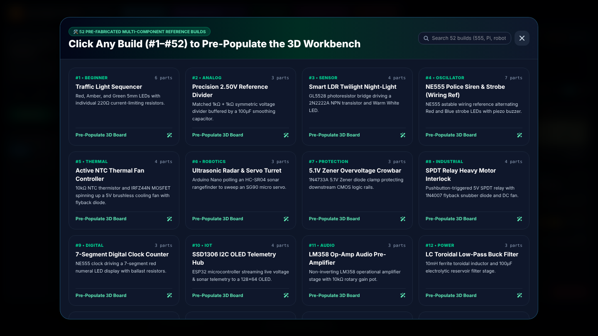
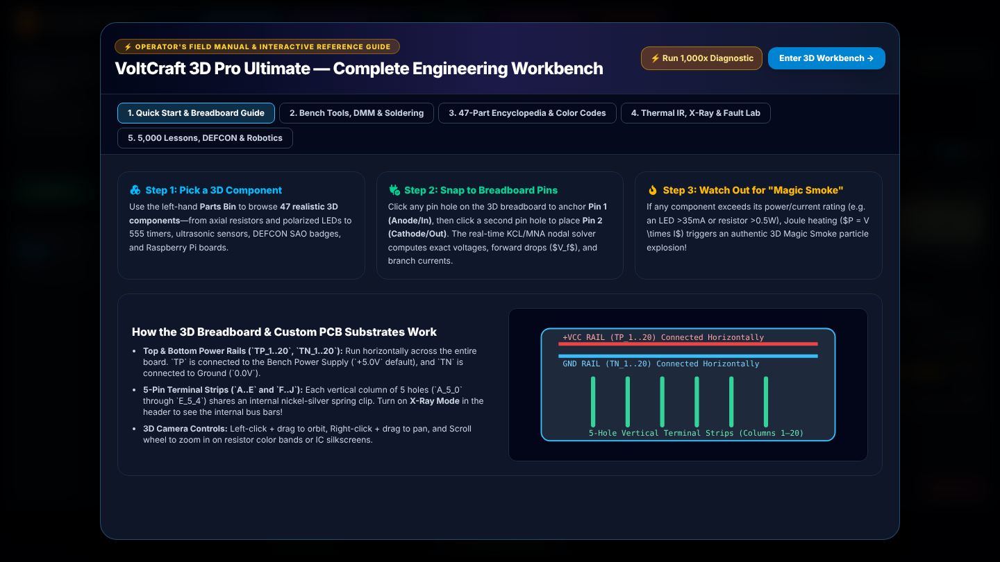

Savvy Security LLC
Two Free Games, Built With AI: Gambit Chess, VoltCraft 3D, and the New Era of Open-Source Learning
I don't write code by hand. What I have is twenty years of practice asking precise questions and turning vague ideas into exact instructions, and it turns out that is now a way to build software. This year I used AI coding tools, including Claude Code, Google's Jules agent and Gemini, to build two games I had always wanted to exist. Both run in a web browser. Neither needs an install, an account or a credit card.
Gambit Chess is a chess variant with dice-rolled stats, a sacrifice economy and hidden traps. VoltCraft 3D Pro Ultimate is a 3D electronics workbench where you wire real parts onto a breadboard and measure them with a virtual multimeter.
This article is about what those two projects show about a bigger shift: one person with a clear idea can now build playable, teachable software on top of open-source foundations. It is also about the limits of that shift, because the evidence says it deserves some skepticism, and a security firm should say so out loud.
Game one: Gambit Chess
Gambit Chess keeps chess movement (with a few simplifications, such as no castling and one-square pawn steps) and changes how captures work. Every piece has an Offense and a Defense stat set by its role, and a capture succeeds only if the attacker's Offense is at least the defender's Defense.[1] Before move one, each player rolls 6d8 three times, keeps the best total, and spends those points on individual pieces. Both sides also start with 10 Gambit Points (GP), which pay for cards: Rally (+2 Offense), Sprint (a pawn moves two squares) and Pitfall, a hidden trap that destroys any non-King piece that steps on it.

Under the hood it is a modern web stack: React and TypeScript for the interface, Three.js (through react-three-fiber) for the 3D board, and Vite to build it into a static site.[1] The computer opponent is a real alpha-beta search engine with four strengths. The top tier is called the Archmage, which is why I sometimes call the game Wizard's Chess. The game's own estimates put the four tiers at roughly 900 (Squire), 1,400 (Knight), 1,800 (Warlord) and 2,100 (Archmage) Elo, with the Archmage thinking for about five seconds per move.[1]

The project began as a one-page rules document written for an AI agent. The first design brief in the repository is addressed to Google's Jules, a coding agent that works asynchronously: it clones a repository into a cloud virtual machine, shows its plan, and returns changes for you to review.[4] That brief set both sides' starting points at zero GP. The shipped game starts each side at 10. The rules changed as I played, and that is the point: the spec is cheap to change, so you can find out what is fun by playing, not by arguing.
Game two: VoltCraft 3D Pro Ultimate
VoltCraft is the opposite kind of project. It is a single HTML file that uses Three.js to draw a breadboard, parts and probes in 3D.[5] You pick from 47 parts, from resistors and LEDs to 555 timers, servos, an ultrasonic sensor and a Raspberry Pi header, click two holes to place one, and a solver computes the voltages. Overload an LED and it releases a puff of "magic smoke," a particle effect that fires when a part exceeds its current or power rating.

Around that core sits a lot of teaching scaffolding: 52 prebuilt reference circuits, 18 themed "arena" builds (conference-badge, robotics and open-hardware projects), a multimeter with voltage, current, resistance and continuity modes, a thermal-camera view, an X-ray view of the breadboard's hidden connections, and a fault-injection mode that hides a defect for you to find with the meter.

An honest note on the numbers. VoltCraft advertises 5,000 lessons. They are generated from 40 core circuit patterns (eight per tier, across five tiers), varied by task type, pin position and part choice. That is a useful way to give a learner endless practice, but it is not 5,000 hand-written lessons, and the simulator is a simplified teaching model, not SPICE. LEDs and diodes use piecewise models and the solver iterates toward node voltages. Say what it is.
What AI actually did, and what it did not
The term "vibe coding" was coined by Andrej Karpathy in February 2025 for a style of programming where you describe what you want and accept what the model writes, sometimes without reading it. It was a throwaway-weekend-project idea; by the end of 2025 Collins English Dictionary had named it Word of the Year.[2] Professional use has moved fast too. Reports cited in Wikipedia's overview say Microsoft put AI-written code at 20 to 30 percent for some projects in April 2025, Snap at least 65 percent of new code by April 2026, and Google roughly three-quarters of new code, all reviewed by human engineers.[3] Tools like Claude Code make that practical for a solo builder: it reads your codebase, edits files, runs commands and works with git.[6]
What AI did for me is the part that used to be a wall: scaffolding a 3D scene, wiring React state, writing a search engine, and standing up a deployment pipeline. What it did not do is decide what is fun, what is correct, or what is safe. Those stayed my job, and the evidence suggests that is where the risk lives:
- Speed is not guaranteed. In a randomized trial summarized on Wikipedia, experienced developers took 19 percent longer with AI tools on 246 tasks, while believing they had been about 20 percent faster.[2]
- Quality needs a check. A December 2025 analysis of 470 open-source pull requests found AI co-authored code carried about 1.7 times more major issues and 2.74 times more security vulnerabilities.[2] Germany's federal cybersecurity agency (BSI) warned in September 2025 that AI coding assistants used without experienced oversight can produce incorrect solutions about half the time.[3]
- Games get cloned. Circana analyst Mat Piscatella warned in July 2026 that AI makes copying a successful game so cheap that clones can bury the originals in store search.[10]
The security angle
Since this is a security firm's blog, here is what a quick review of my own two projects turned up. It is the kind of review any AI-assisted project should get.
- Gambit Chess has a small attack surface. Vite bundles it into static files. It has no accounts and no game server, its code makes no network calls, and it uses browser storage only to remember your rating and board theme. Its one outside request is a Google Fonts stylesheet for the typography, which is the kind of dependency worth self-hosting. A "math audit" test suite covers the dice generator, the probability formulas, the combat rule (checked exhaustively across piece roles), card costs, checkmate and stalemate, and the search engine's move generation, and it runs in the deployment pipeline before every publish.[1]
- VoltCraft has a supply-chain gap. It loads Tailwind, Three.js, OrbitControls, Font Awesome and Google Fonts from third-party hosts at runtime, with no Subresource Integrity hashes. If a host that serves one of those scripts were compromised, the page would run the attacker's code. The fix is routine: self-host or pin the files and add integrity hashes. AI tools tend to reach for the convenient CDN snippet, so someone has to ask.
Do games actually teach?
This is where the hype needs the most care. The most rigorous test of "chess makes kids smarter" is a randomized trial of the Chess in Schools and Communities program: about 4,000 Year 5 pupils (roughly ages 9 to 10) in 100 English primary schools, with chess replacing a weekly lesson for roughly 30 hours in the 50 schools that got it. One year later it found no effect on maths, reading or science.[7] The authors attribute much bigger results in earlier studies to small samples and weak outcome tests, and they note that social and enjoyment benefits were not measured.
The wider evidence on game-based learning is modestly positive. A 2025 meta-analysis of 13 studies found a small positive effect (g = 0.134) on students' higher-order maths thinking, with results varying by factors such as education level and how long the intervention ran.[8] A general overview of the field likewise describes parts of the evidence as limited and notes that teachers need training and support to use games well.[9]
So I do not claim these games make you smarter. The honest claim is narrower and still worthwhile: a game can make an abstract rule visible and let you test it as many times as you like. In VoltCraft you can watch an LED dim when you swap a resistor, or pop when you leave it out. In Gambit Chess you get a feel for probability by seeing why the best of three 6d8 rolls averages about 32 points.[1] Whether that transfers to a classroom is a question for measurement, not marketing.
Why open source is the other half of the story
AI can write the glue, but the foundations are open source. Three.js is MIT-licensed and has more than 115,000 stars on GitHub.[5] That is why a non-programmer can stand up a 3D scene in an afternoon instead of writing a graphics engine. And open code is a learning tool in its own right: a 2016 Opensource.com guide argued that students learn by reading and modifying real game code, and singled out GNU Chess as a way to see how chess engines work beneath the interface.[11]
Gambit Chess's source, tests and rules are public on GitHub, so a curious player can read the combat rule, run the stress tests, or change the stats and see what breaks.[1] VoltCraft ships as one HTML file you can open, read and modify. The next step for both is a clear license so that "free to play" becomes "free to reuse."
A playbook for your own AI-built project
- Write the spec first. A one-page rules document gave the AI a target and gave me something to revise.
- Make tests the contract. If the rules are math, test the math, and make the pipeline refuse to deploy when tests fail.
- Review dependencies like a defender. Bundle or pin them, and never trust a convenient CDN tag by default.
- Describe the project honestly. Say "generated from 40 patterns," not "5,000 hand-written lessons."
- Add a license. If you want people to learn from your code, tell them they may.
- Play it yourself. No model can tell you whether it is fun.
Savvy Security LLC will keep building and writing in this space. If you are thinking about using AI to ship a product, a training tool or an internal game, and want a second pair of eyes on the security and the claims, get in touch.
Try it. Gambit Chess is free to play against the computer or a friend, and the source is on GitHub.
Play Gambit Chess View the sourceSources
All links accessed October 16, 2026. Figures 1 to 4 were made for this article from the games' own code and interface; the Gambit Chess figure is the game's published share image.
- Smith, M. R. Gambit Chess: README, source code and live game. github.com/malcolm1014/Gambit-Chess · play
- Wikipedia. "Vibe coding" (Karpathy's February 2025 coinage, Word of the Year, the METR randomized trial, and the CodeRabbit analysis). en.wikipedia.org/wiki/Vibe_coding
- Wikipedia. "AI-assisted software development" (reported Microsoft, Snap and Google figures; Germany's BSI warning of September 2025). en.wikipedia.org/wiki/AI-assisted_software_development
- Google. "Build with Jules, your asynchronous coding agent." Google Labs blog. blog.google/technology/google-labs/jules
- mrdoob et al. three.js, MIT-licensed JavaScript 3D library. GitHub. github.com/mrdoob/three.js
- Anthropic. "Claude Code overview." code.claude.com/docs/en/overview
- Jerrim, J., Macmillan, L., Micklewright, J., Sawtell, M., & Wiggins, M. (2017). Randomised controlled trial of the Chess in Schools and Communities program in English primary schools. Journal of Human Resources. PDF copy
- Anggoro, B. S., Dewantara, A. H., Suherman, S., Muhammad, R. R., & Saraswati, S. (2025). Effect of game-based learning on students' mathematics high order thinking skills: A meta-analysis. Revista de Psicodidáctica (English Edition), 30(1). elsevier.es
- Wikipedia. "Game-based learning." en.wikipedia.org/wiki/Game-based_learning
- Games.gg (July 15, 2026). "AI Vibe Coding Threatens Good Games on Steam, Analyst Warns" (comments by Mat Piscatella, Circana). games.gg
- Williams, B. (July 13, 2016). "7 open source games for students." Opensource.com. opensource.com